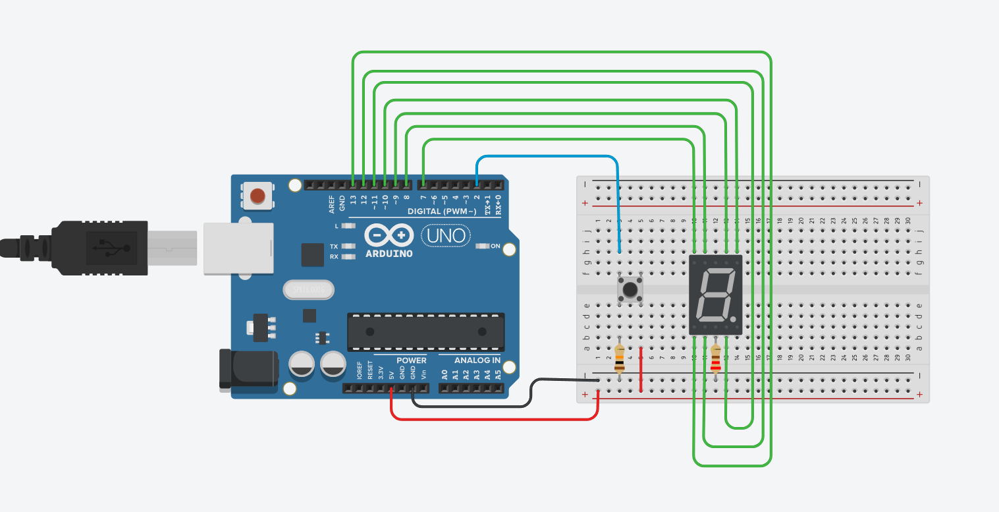
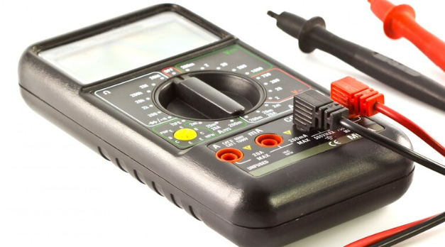

Eletroeletronica
Resistores e codigo de cores :
Resistores são componentes elétricos passivos amplamente utilizados em circuitos para limitar ou regular a corrente elétrica. A resistência é medida em ohms (Ω). Cada resistor tem um valor de resistência, que pode ser identificado usando um código de cores padrão. O código de cores é uma convenção de faixas coloridas pintadas no corpo do resistor. Cada faixa representa um número ou um multiplicador, permitindo determinar o valor da resistência e a tolerância.
Resistores são componentes elétricos passivos amplamente utilizados em circuitos para limitar ou regular a corrente elétrica. A resistência é medida em ohms (Ω). Cada resistor tem um valor de resistência, que pode ser identificado usando um código de cores padrão. O código de cores é uma convenção de faixas coloridas pintadas no corpo do resistor. Cada faixa representa um número ou um multiplicador, permitindo determinar o valor da resistência e a tolerância.
Diodo led:
Os diodos LEDs e os displays de sete segmentos são componentes eletrônicos amplamente utilizados em circuitos para indicação visual.
Display sete segmentos:
O display de sete segmentos é um componente usado para exibir números e, em alguns casos, letras. Ele consiste em 7 LEDs organizados em forma de "8", com cada LED chamado de "segmento".
Os diodos LEDs e os displays de sete segmentos são componentes eletrônicos amplamente utilizados em circuitos para indicação visual.
Display sete segmentos:
O display de sete segmentos é um componente usado para exibir números e, em alguns casos, letras. Ele consiste em 7 LEDs organizados em forma de "8", com cada LED chamado de "segmento".

.png)
Tinkercard
O Tinkercad é uma ferramenta online, e gratuita, de criação e também de design de modelos em 3D. Os usuários podem desenvolver seus projetos de forma fácil e simples, com geometrias variadas, em um sistema com layout super intuitivo e acessível de usar. Abaixo esta um exemplo do Tinkercad feito pela empresa Castelo
O Tinkercad é uma ferramenta online, e gratuita, de criação e também de design de modelos em 3D. Os usuários podem desenvolver seus projetos de forma fácil e simples, com geometrias variadas, em um sistema com layout super intuitivo e acessível de usar. Abaixo esta um exemplo do Tinkercad feito pela empresa Castelo
Placa arduino
Arduino é uma plataforma que possibilita o desenvolvimento de projetos eletrônicos. Em outras palavras, é uma plataforma de prototipagem eletrônica. O Arduino é constituído de hardware e software, tornando assim possível a realização de diversos projetos tecnológicos
Arduino é uma plataforma que possibilita o desenvolvimento de projetos eletrônicos. Em outras palavras, é uma plataforma de prototipagem eletrônica. O Arduino é constituído de hardware e software, tornando assim possível a realização de diversos projetos tecnológicos

Programa no IDE Arduino
A IDE do Arduino é um ambiente de desenvolvimento que permite escrever, compilar e enviar códigos para a placa Arduino. O código geralmente é escrito em C/C++, e a IDE facilita a interação com a placa, além de fornecer recursos como monitor serial para depuração e visualização de dados em tempo real.
A IDE do Arduino é um ambiente de desenvolvimento que permite escrever, compilar e enviar códigos para a placa Arduino. O código geralmente é escrito em C/C++, e a IDE facilita a interação com a placa, além de fornecer recursos como monitor serial para depuração e visualização de dados em tempo real.
Entrada Analógica no Arduino
A entrada analógica no Arduino permite ler sinais variáveis (como tensão) de sensores ou outros dispositivos que produzem uma saída contínua. O Arduino converte essa tensão em um valor digital entre 0 e 1023 usando um conversor analógico-digital (ADC). Exemplos de sensores de entrada analógica são potenciômetros e sensores de temperatura.
A entrada analógica no Arduino permite ler sinais variáveis (como tensão) de sensores ou outros dispositivos que produzem uma saída contínua. O Arduino converte essa tensão em um valor digital entre 0 e 1023 usando um conversor analógico-digital (ADC). Exemplos de sensores de entrada analógica são potenciômetros e sensores de temperatura.
Saida Analógica no Arduino
A saída analógica no Arduino é gerada por modulação por largura de pulso (PWM), que simula um sinal analógico. Embora o Arduino não tenha saídas analógicas reais, a técnica PWM permite controlar dispositivos como LEDs, motores e outros atuadores, variando a intensidade do sinal de acordo com o ciclo de trabalho (duty cycle).
A saída analógica no Arduino é gerada por modulação por largura de pulso (PWM), que simula um sinal analógico. Embora o Arduino não tenha saídas analógicas reais, a técnica PWM permite controlar dispositivos como LEDs, motores e outros atuadores, variando a intensidade do sinal de acordo com o ciclo de trabalho (duty cycle).

Saída Digital no Arduino
A saída digital no Arduino permite enviar sinais binários para controlar dispositivos, como LEDs, relés, ou outros componentes. Pode ser configurada para enviar sinais em dois estados: HIGH (1) ou LOW (0), com base na programação.
A saída digital no Arduino permite enviar sinais binários para controlar dispositivos, como LEDs, relés, ou outros componentes. Pode ser configurada para enviar sinais em dois estados: HIGH (1) ou LOW (0), com base na programação.
Multímetro
multímetro é um instrumento de medição usado para verificar várias propriedades elétricas de circuitos, como tensão (volts), corrente (amperes) e resistência (ohms). Pode ser digital ou analógico e é essencial para diagnosticar problemas em circuitos e garantir que os componentes estejam funcionando corretamente.
multímetro é um instrumento de medição usado para verificar várias propriedades elétricas de circuitos, como tensão (volts), corrente (amperes) e resistência (ohms). Pode ser digital ou analógico e é essencial para diagnosticar problemas em circuitos e garantir que os componentes estejam funcionando corretamente.
Unidades de Medida no Multímetro
Tensão (Volts - V): Mede a diferença de potencial elétrico entre dois pontos de um circuito.
Corrente (Amperes - A): Mede a quantidade de carga elétrica que passa por um ponto do circuito em um segundo.
Resistência (Ohms - Ω): Mede a resistência de um componente ao fluxo de corrente elétrica.
Outras unidades: Alguns multímetros também medem frequência (Hertz - Hz), capacitância (Farad - F), entre outras propriedades elétricas, dependendo do modelo.
Esses conceitos e ferramentas são fundamentais para quem está começando no mundo da eletrônica e programação, e são usados para criar e testar circuitos em plataformas como o Arduino.
Tensão (Volts - V): Mede a diferença de potencial elétrico entre dois pontos de um circuito.
Corrente (Amperes - A): Mede a quantidade de carga elétrica que passa por um ponto do circuito em um segundo.
Resistência (Ohms - Ω): Mede a resistência de um componente ao fluxo de corrente elétrica.
Outras unidades: Alguns multímetros também medem frequência (Hertz - Hz), capacitância (Farad - F), entre outras propriedades elétricas, dependendo do modelo.
Esses conceitos e ferramentas são fundamentais para quem está começando no mundo da eletrônica e programação, e são usados para criar e testar circuitos em plataformas como o Arduino.
